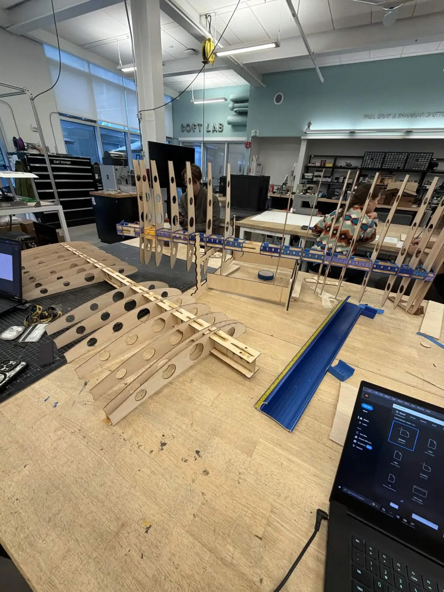
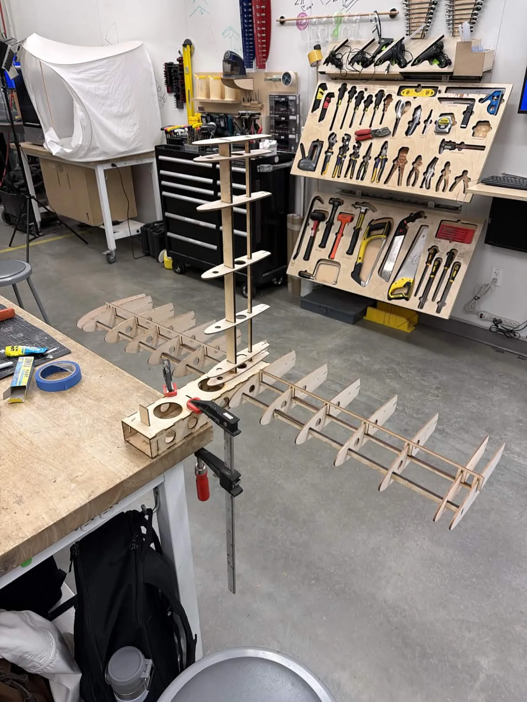
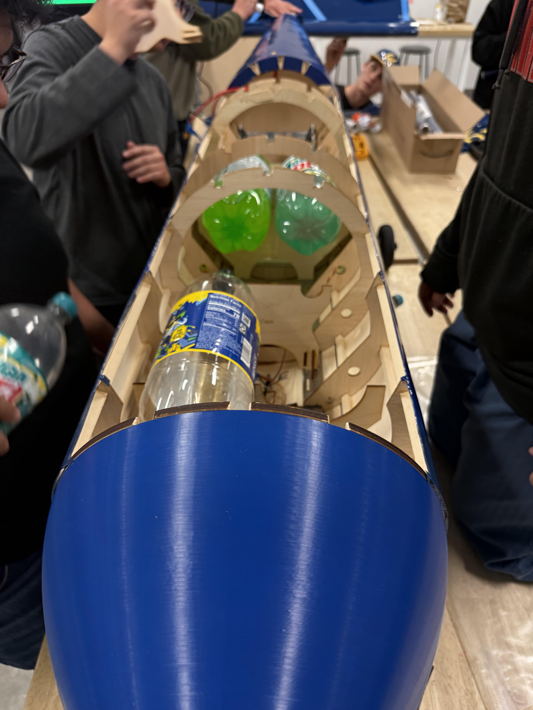
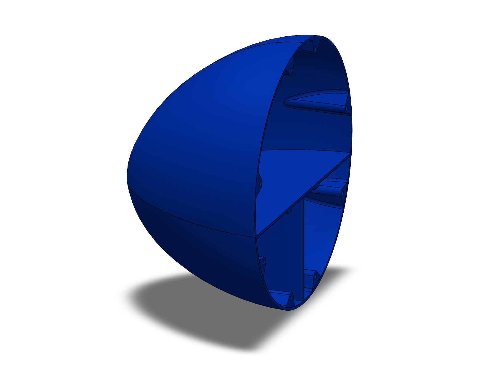
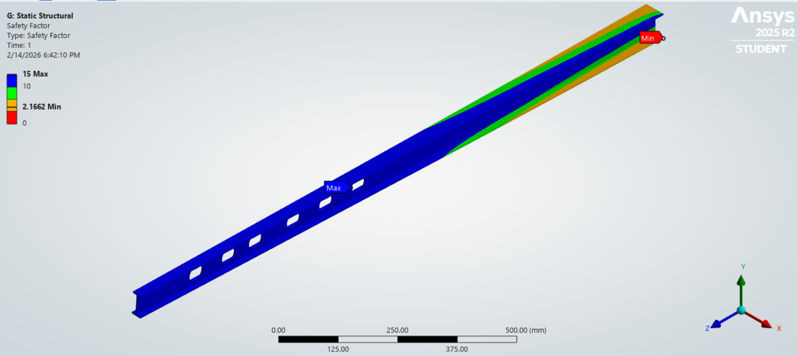

Overview
As a member of Berkeley's SAE Aero Design team, I have worked on the design, manufacturing, and assembly of the
aircraft fuselage, wings, and tail, and currently serve as Fuselage & Tail Lead. My work has included designing
structural components and manufacturing tooling in SolidWorks, performing structural analysis in ANSYS, fabricating
aircraft components, and helping assemble the completed aircraft.
Because the aircraft is developed by a large team, much of my work has focused not only on individual components but
also on how designs are manufactured, assembled, and communicated between members. Several of my contributions came
from identifying problems with previous manufacturing methods and developing simpler or more repeatable approaches.
Wing Assembly Tooling

The previous jigs for the wing ribs
The team's previous wing manufacturing process required approximately 20 individual FDM-printed jigs to position the
ribs during assembly. Producing a complete set took several days, and the thin printed features made the jigs
susceptible to breaking.
I redesigned the tooling as a single laser-cut fixture that located multiple ribs relative to each other
simultaneously. The new fixture could be manufactured in minutes rather than days and provided a common reference for
rib alignment during assembly.

The new laser-cut jigs for the wing ribs
Aircraft Manufacturing & Assembly
A large part of my work on Aero has involved manufacturing and assembling the physical aircraft. I had a major role in constructing the wings, including assembling the spars and ribs and using manufacturing fixtures to maintain alignment throughout the build. I also manufactured and assembled fuselage components and built the structures used to secure the aircraft's 2-liter bottle payload.

The main wing during manufacturing and assembly in 2026

The 2026 payload holder integrated with the aircraft holding bottles
For the fuselage, I helped lead the assembly of the formers and bulkheads after the member who originally designed the
structure graduated. Before he left, I spent time observing the assembly process and asking questions about the design
and manufacturing approach so that I understood how the structure was intended to go together. I was then able to
carry that knowledge into the following build and help guide other members through the assembly.
I also designed and FDM-manufactured the aircraft nosecone in SolidWorks and supported the fabrication and assembly of
additional aircraft components.

The nosecone for the 2026 aircraft
Structural Analysis
I also began applying ANSYS Mechanical to evaluate the aircraft's primary structures. For the main wing spar, which
used a built-up I-beam geometry, I created a structural model incorporating gravity and a remote load representing
loading applied through the wing.
I used the model to evaluate the resulting stress and deflection of the spar and gain experience defining loads,
constraints, and material properties for aircraft structures.

FEA simulation of the 2026 aircraft's main spar showing Factor of Safety
Improving the Manufacturing Process
Working on the previous aircraft also exposed several areas where the team's process could be improved. Material
quantities were not always clearly defined early in the design process, contributing to approximately a month of delay
in finalizing and receiving wood, while incomplete communication of design intent also contributed to errors during
assembly.
As Fuselage & Tail Lead, I introduced BOMs, ballooned drawings, and exploded assembly views into the team's design
process to define material quantities earlier and more clearly communicate how components should be manufactured and
assembled.
I have also trained more than 10 team members to create and use these practices so that the process can be applied
throughout the team's designs rather than remaining dependent on individual members.
Current Work as Fuselage & Tail Lead
As Fuselage & Tail Lead, I am currently working with other members on the structural layout and manufacturing approach
for the next aircraft while coordinating the design and manufacturing of the fuselage and tail structures.
One area I want to improve is the structural analysis used to guide weight reduction. Last year's aircraft was
structurally conservative in several areas, and I saw an opportunity to better understand where material could be
removed without compromising structural performance. We modeled balsa as an orthotropic material in ANSYS, but I want
to research and develop more representative values for its direction-dependent mechanical properties so that the
analysis better reflects the wood we actually use.
I also plan to build on my previous spar analysis by comparing FEA predictions against first-principles structural
calculations and physical testing where possible. With greater confidence in the material properties and structural
models, I want to use the analysis to guide material removal and structural geometry rather than relying primarily on
conservative sizing.
As the current aircraft progresses, I am also incorporating BOMs, manufacturing drawings, and assembly documentation
earlier in the design process so that material requirements and manufacturing constraints are defined before
fabrication begins.
What I Learned
Aero SAE has been less about learning individual CAD or analysis tools and more about applying engineering skills within
a larger team and manufacturing environment. Building and assembling components designed by other members showed me how
important it is for design and assembly intent to remain understandable beyond the person who originally created the CAD,
especially as members graduate and responsibilities change.
I also learned that improving a design or manufacturing process does not always require a complicated solution. Replacing
approximately 20 FDM-printed wing jigs with a single laser-cut fixture was a relatively simple design change, but it
reduced manufacturing time from days to minutes while making the assembly process more repeatable.
As I moved into a lead role, my focus expanded beyond the components I personally design. I now have to consider whether
another member can understand a design, determine what material is required, manufacture it correctly, and assemble it
without relying on the original designer being present. This has pushed me to improve the team's use of BOMs, drawings,
and assembly documentation and to think about how design decisions affect the entire manufacturing process.